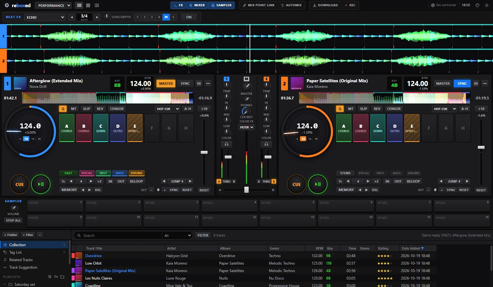
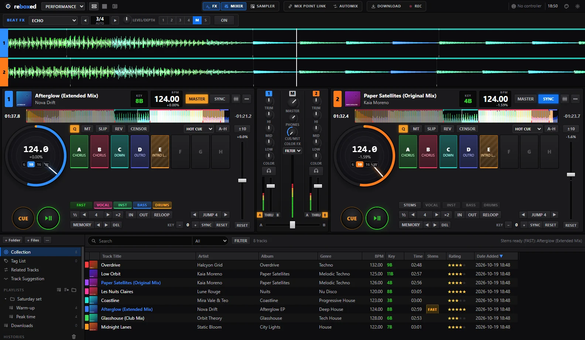
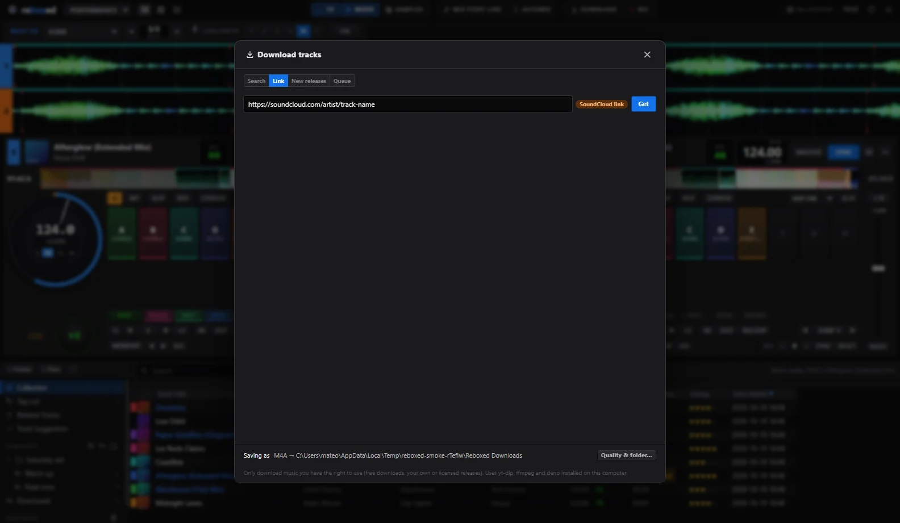
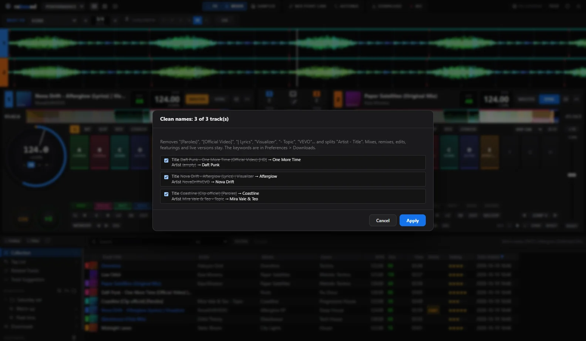
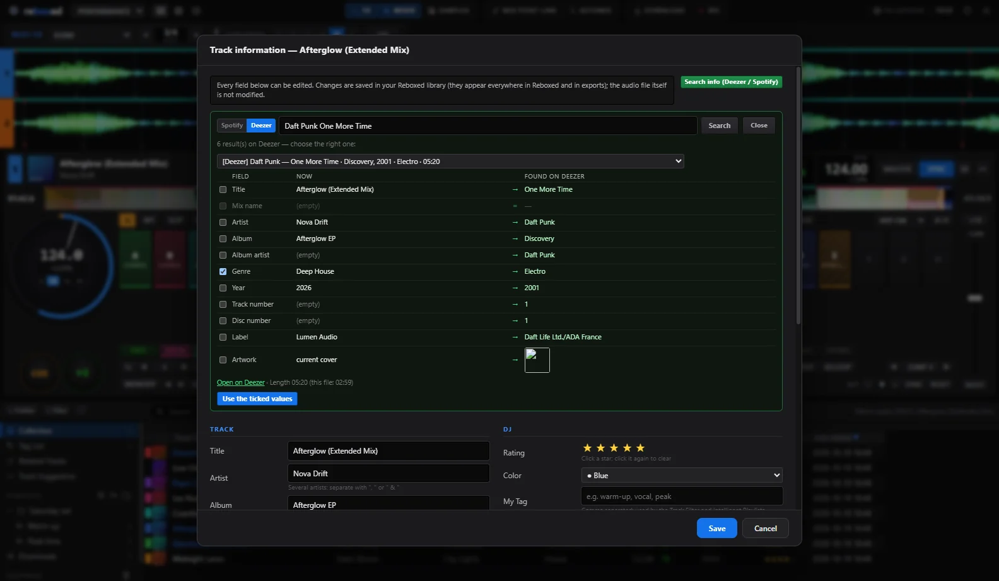
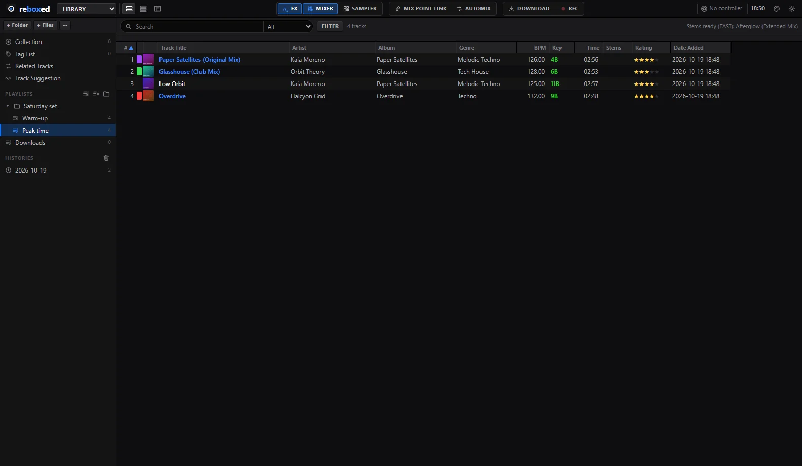
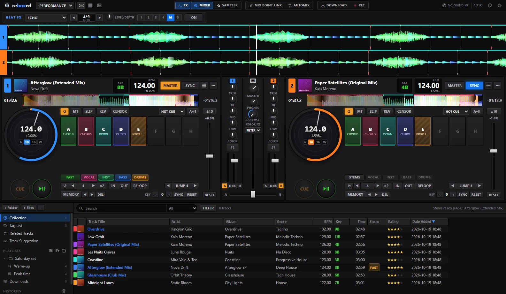
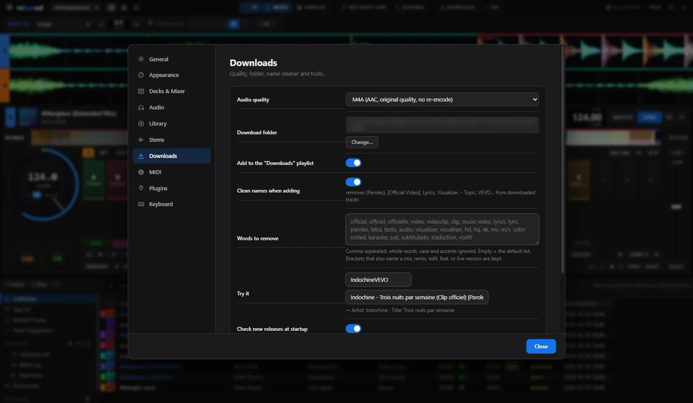

Decks & jogs
Le mode PERFORMANCE
- Des decks avec un jog qui tourne à 33⅓ tours : BPM au centre, calibres ±6 / ±10 / ±16 / WIDE, progression du morceau sur l'anneau. Glisse dessus pour scratcher.
- CUE façon CDJ, 16 hot cues, memory cues, boucles de 1/64 à 512 temps, beat jump, quantize.
- Master Tempo, Key Shift et Key Sync, Slip, Reverse, Censor, Beat Sync, Instant Doubles.
- Pads HOT CUE, BEAT LOOP, BEAT JUMP, SLICER, SAMPLER, KEY SHIFT, KEYBOARD.


Mixer & effets
Mixer, Beat FX, sampler
- Trim, auto-gain, EQ isolateur 3 bandes, Color FX (FILTER, SPACE, DUB ECHO, NOISE, CRUSH), cue casque sur une 2ᵉ carte son.
- 16 Beat FX synchronisés au BPM, sur CH1–4 ou MASTER.
- Sampler 16 slots : clic sur une case vide = la boucle qui joue y entre. Enregistre, édite (découpe, mode, sync) ou éjecte chaque sample.
- Automix, enregistrement WAV.

Analyse
Une onde précise
- BPM et grille (constante ou dynamique), tonalité en Camelot ou classique.
- Phrases (INTRO, CHORUS, DOWN…) et hot cues créés depuis les phrases.
- Forme d'onde 3Band / RGB / BLUE
- Track Suggestion

Téléchargement
YouTube & SoundCloud
- Search : choisis YouTube ou SoundCloud. Link : la plateforme est reconnue toute seule.
- M4A, MP3 320, FLAC ou WAV, directement dans la collection.
- Nettoyeur de noms : Pour une playlist plus clean
Nécessite yt-dlp, ffmpeg et deno installés à part. Ne télécharge que ce que tu as le droit d'utiliser.


Tags
Deezer, Spotify, auto-tag
- Search info : Deezer (sans compte, avec les genres) ou Spotify. Tu coches ce que tu remplaces.
- Auto-tag en masse : par exemple Spotify pour titre et artistes, puis Deezer pour le genre.
- Artiste, titre et durée doivent concorder. Aperçu avant d'appliquer, annulation possible.


Bibliothèque
Ta collection, organisée
- Playlists, dossiers, Intelligent Playlists, Tag List, historiques, notes, couleurs, My Tag.
- Même moteur de recherche que rekordbox, Track Filter.
- Import rekordbox (XML) : cues, grilles, playlists. Export XML et M3U8.
- Bibliothèque sur clé USB possible et ENFIN pratique et intuitif.

Interface
Épurée, à tes couleurs
- 8 thèmes, couleur d'accent au choix, taille de 85 à 125 %.
- Mises à jour en un clic, depuis l'appli.

